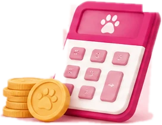
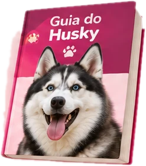

No arTem pet? Tem eventos? Tem hospedagem? Tem adoção?
Seu mundo pet, em um só lugar.
Encontre serviços, descubra eventos, participe da comunidade e tenha tudo o que seu pet precisa a poucos cliques de distância.
Quando o pet precisa, não dá pra perder tempo procurando.
Tudo que é de pet está espalhado em vários lugares. No Abanô, você encontra as soluções de que precisa em um só lugar, com praticidade e segurança.
Encontre o que você precisa para o seu pet.
Serviços, cuidado, segurança, bem-estar e muito mais, tudo em um só lugar.
Calculadora de custos
Descubra o custo mensal e anual do seu pet, da ração ao veterinário, em poucos cliques.
Simular agora
Guia do Husky
Tudo sobre pelo, calor, fuga, alimentação e cuidados, com informações reais e práticas.
Ler o guia
Eventos pet
Encontros, feiras e passeios perto de você.
Em breveHospedagem
Hotéis, creches e pet sitters perto de você.
No arVeterinários e serviços
Clínicas 24h, banho e tosa, pet shop e adestramento.
No arAdoção
Cães e gatos de ONGs e protetores da sua região.
NovoPet desaparecido
Cartaz pronto e alerta para quem está perto.
Em brevePerfil do pet com QR
Identificação rápida e segura para o seu pet.
Em breveComunidade Abanô
Conecte-se, compartilhe experiências e tire dúvidas.
No arMais novidades
Novas ferramentas, conteúdos e recursos em breve.
Em breveComece agora em três passos simples.
É rápido, gratuito e você já começa a aproveitar todo o universo do Abanô.
-
Passo 1: Crie sua conta
É grátis e leva apenas um minuto.
-
Passo 2: Monte o perfil do seu pet
Adicione foto, raça, idade e outras informações.
-
Passo 3: Participe da Comunidade
Conecte-se, tire dúvidas, compartilhe experiências e faça parte dos clubes.
Por que o Abanô?
Porque reunimos em um só lugar as ferramentas, as informações e uma comunidade real, feita por pessoas que vivem a rotina pet todos os dias.
- Praticidade no dia a dia
- Mais segurança
- Comunidade ativa
- Conteúdo confiável